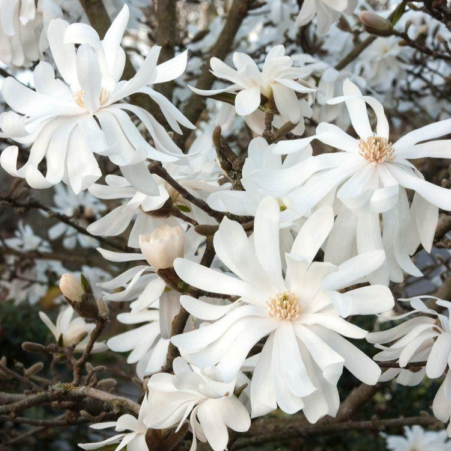
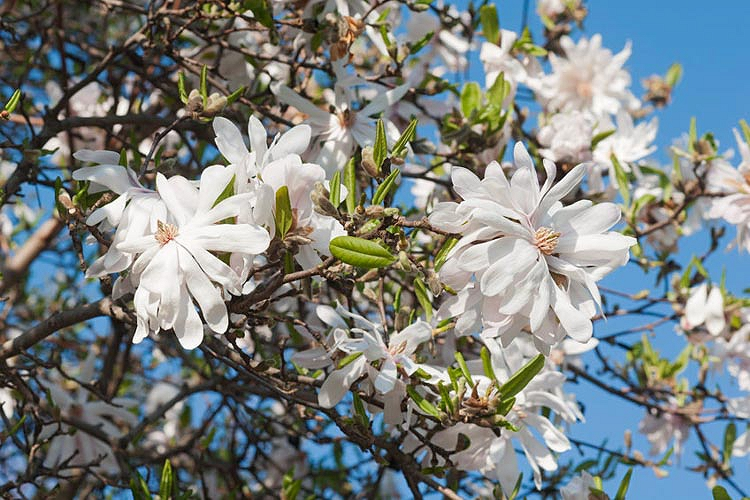

Common Name: Magnolia, 玉兰
Botanical Name: Magnolia-stellata
 
Other references
RHS
Gardenia
Gardeners' World
GardeningKnowHow
Grow Magnolia stellata in a sheltered spot, away from strong winds. There’s usually little need to prune, but in summer remove any broken, diseased or crossing branches. Mulch in spring with manure and leaf mould.
M. stellata is a slow-growing medium-sized deciduous shrub of broadly rounded habit. Leaves narrowly obovate. Flowers white, to 10cm in width, with up to 18 narrowly oblong, spreading white tepals, in early spring .
Grow in moist but well-drained neutral to acid soil in full sun or part shade with shelter from cold winds. Late frosts may damage flower buds. Will grow in alkaline soil that is moisture retentive. Further magnolia cultivation advice .
土壤：玉兰喜欢肥沃、排水性良好的微酸性土壤。浇水：浇水一定不要过多，夏季和春季每天浇水一次。光照：需要阳光充足的环境，每天都要接受阳光照射。施肥：生长期时适当施肥，促进其生长。 适量施肥可以帮助其更好生长，但是施肥一定不要过量。生长期时施两次肥可以帮助它成长，在早春和5-6月份分别施一次肥。肥料一般要使用腐熟的有机肥，新栽植的不用进行施肥，等落叶之后或第二年夏天再施肥。
- Magnolia pruning should be carried out in midsummer when in full leaf.
- A couple of inches (5 cm.) of compost in late winter will encourage prolific blooms.
- Water during times of drought and prune dead or damaged branches when needed but only after the tree has flowered.
木兰是落叶小乔木，高可达15m。树冠卵形或近球形。幼枝及芽均有毛。倒卵状长椭圆形叶子，长10～15cm，先端突尖而短钝，基部广楔形或近圆形，幼时被面有毛。花大，迳12～15cm，多达18片花瓣。花色有白色，黄色，粉色，紫色和绿色。
木兰喜光，稍耐荫，颇耐寒。喜肥沃适当湿润而排水良好的酸性土壤（pH5～6），但亦能生长于碱性土（pH7～8）中。根肉质，畏水淹。生长速度较慢。
玉兰花大、洁白而芳香，是中国著名的早春花木，因为开花时无叶，固有“木花树”之称。最宜列植堂前、点缀中庭。从公元6世纪开始，它被种植于中国佛教寺庙的花园中。在唐朝时它的花朵被看作是纯洁的象征，并且栽种在皇帝宫殿的花园里。民间传统的宅院配植中讲究“玉棠春富贵”，其意为吉祥如意、富有和权势。所谓玉即玉兰、棠即海棠、春即迎春、富为牡丹、贵乃桂花。玉兰盛开之际有“莹洁清丽，恍疑冰雪”之赞。如配植于纪念性建筑之前则有“玉洁冰清”象征着品格的高尚和具有崇高理想脱却世俗之意。如从植于草坪或针叶树丛之前，则能形成春光明媚的景境，给人以青春、喜悦和充满生气的感染力。此外玉兰亦可用于室内瓶插观赏。
玉兰花瓣质厚而清香，可裹面油煎食用，又可糖渍，香甜可口。种子可榨油，树皮可入药，木材可供制小器具或雕刻用。在中药中，木兰属的树皮称为厚朴，花蕾称为辛夷，具药用功效。
我家的木兰树是前房主留下的。如果从种子种植的话，大约要等15年甚至40年才能开花。市面上卖的大多是嫁接的树苗，最多三年就会开花了。